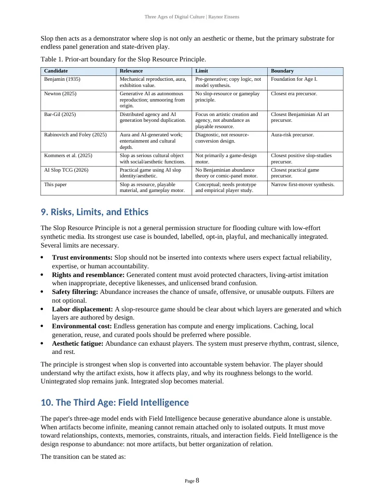

PDF page 1
Three Ages of Digital Culture | Raynor Eissens
Three Ages of Digital Culture
From Mechanical Reproduction to Generative Abundance
AI Slop as the First New Digital Resource, Playable Material, and Gameplay Motor
Raynor Eissens
DOI: 10.5281/zenodo.21226168
July 2026
Abstract
Walter Benjamin analyzed how mechanical reproduction changed culture by allowing one original to become many copies, weakening the artwork's aura and shifting value toward exhibition, circulation, and mass reception. Generative AI introduces a different media regime. It does not merely reproduce an original. It allows one foundation model to synthesize effectively unlimited new artifacts across text, image, audio, code, animation, and game assets. This paper names that regime the Age of Generative Abundance. Its defining symptom is AI slop: low-attention, disposable, generic, or degraded synthetic output produced at a scale that overwhelms inherited systems of attention and evaluation. The paper extends Benjamin through recent AI literature on foundation models, distributed agency, AI reproducibility, model collapse, and emerging slop studies. It then proposes the Slop Resource Principle: under designed conditions, AI slop should not be understood only as pollution, spam, or cultural decay, but also as an abundant digital material that can be filtered, framed, recombined, and made playable. Comix Slop is presented as a conceptual demonstrator: an endless comic-book action brawler in which generated panels, enemies, backgrounds, captions, and page structures function as the primary gameplay resource. The contribution is not the claim that all slop is good, nor that slop should flood public information spaces. The narrower claim is that slop becomes materially interesting when moved from unbounded attention markets into bounded play systems, where abundance can be converted into variation, rhythm, surprise, and interaction.
Keywords: Walter Benjamin; aura; mechanical reproduction; generative AI; foundation models; generative abundance; AI slop; Slop Resource Principle; playable material; gameplay motor; Comix Slop; media theory; game design.
1. Introduction
The cultural problem of AI slop is usually described as a problem of quality. The web fills with synthetic images, auto-generated books, dead-eyed videos, formulaic text, work reports, clickbait, spam, and decorative content that appears competent for a moment and then collapses under attention. That diagnosis is necessary, but incomplete. Slop is not only an aesthetic failure. It is a symptom of a new production regime.
The shift can be stated simply. Mechanical reproduction made copies cheap. Generative AI makes synthesis cheap. In the age analyzed by Benjamin, one original could be photographed, printed, filmed, and distributed as many copies. In the present regime, one trained model can produce indefinitely many artifacts that are not copies in the classical sense. They are generated instances: statistically assembled outputs from latent distributions, prompted contexts, training corpora, and platform incentives.
Page 1
PDF page 2
Three Ages of Digital Culture | Raynor Eissens
This difference matters. A copy still points backward to an original. A generated artifact often points sideways into a model, a prompt, a dataset, a platform, and a distribution of possible outputs. Its origin is diffuse. Its historical attachment is weak. Its abundance is native. This paper therefore proposes a three-age model of digital culture: the Age of Mechanical Reproduction, the Age of Generative Abundance, and the Age of Field Intelligence.
The central concept is the Slop Resource Principle. The principle does not deny that AI slop can damage public culture, weaken trust, burden human reviewers, or pollute training data. Those harms are real. The principle instead separates open information environments from bounded design environments. In open feeds, slop often acts as noise. In a game, simulation, or procedural world, the same properties can become material: abundance, disposability, variation, absurdity, and low marginal cost.
Comix Slop illustrates this shift. A fixed comic-book action game is limited by authored pages, enemies, backgrounds, and gags. A generative comic-brawler can treat the page itself as a dynamic level structure. Panels resize. Backgrounds mutate. Captions misbehave. Enemies spawn from cheap synthetic variation. The player does not merely consume AI content. The player fights through it, edits it by action, routes through it, and converts slop into tempo. Slop becomes a gameplay motor.
2. Benjamin and the First Media Break: Mechanical Reproduction
Benjamin's essay remains powerful because it identifies a structural transformation rather than a mere change in tools. Mechanical reproduction destabilizes the relationship between artwork, place, ritual, and viewer. The reproduced image can circulate apart from the unique here-and-now of the original. Aura is not simply beauty. It is the density of presence that attaches to a unique object in a particular history, setting, and chain of transmission.
Mechanical reproduction changes culture by multiplying access. A painting may remain unique, but its image can be printed and distributed. Film goes further, because its native form is reproducible. There is no single original performance in the same way there is a single painting. The camera, cut, edit, and projection apparatus create the work as mass-circulating technical form. The cultural unit shifts from object to circulation.
The basic formula of the first media break can be written as follows:
Original artifact O -> mechanical reproduction R(O)n -> many copies -> aura attenuation -> exhibition value
This formula does not mean that value disappears. It means that value relocates. Ritual value weakens; exhibition value rises. Distance collapses; access expands. Political and mass-cultural consequences follow because artworks enter different circuits of perception.
The relevance for generative AI begins here, but it cannot end here. Generative systems do not simply intensify copying. They alter the unit of cultural production. The decisive object is no longer the original artwork, nor even the reproduced copy. It is the model as an artifact-producing engine.
3. From Reproduction to Generation: Relevant AI Literature
3.1 Foundation models as engines of cultural production
The foundation-model literature gives the technical basis for generative abundance. Bommasani et al. define foundation models as broad models trained at scale and adaptable across many downstream tasks. Their
Page 2
PDF page 3
Three Ages of Digital Culture | Raynor Eissens
centrality is not only technical but infrastructural. A single model family can become a general-purpose substrate for text, images, code, audio, interface generation, analysis, search, and agentic action.
This matters for media theory because the model becomes a new cultural engine. It is not one tool among many. It is a compressed production apparatus. It absorbs vast prior cultural material, then outputs new artifacts on demand. The cost curve changes: a user can request hundreds of variations before a previous media workflow would have produced a single draft.
In Benjaminian terms, the apparatus is no longer only the camera, press, or projector. It is the trained model, the inference pipeline, the prompt interface, the moderation layer, the platform, and the feedback loop between user and output.
3.2 Stochastic parrots, synthetic output, and cultural risk
Critical AI literature warns that large-scale generative systems can produce fluent outputs without grounded understanding, embed bias, obscure labor, and generate environmental and social costs. The Stochastic Parrots critique is relevant here because slop often appears as fluent surface without deep situated meaning. It is not necessarily false or useless, but it is frequently detached from the dense accountability structures that support human-authored work.
The model-collapse literature adds a second warning. If generative systems increasingly train on their own outputs, the tails of the original distribution can disappear and future models can inherit irreversible defects. This gives slop a double status. It is both a visible public symptom and a possible contaminant in future technical systems. The Slop Resource Principle therefore cannot be an indiscriminate defense of synthetic flooding. It must be a design principle with boundaries.
3.3 Benjamin updated for generative AI
Recent Benjaminian AI scholarship has already recognized that generative AI exceeds mechanical reproduction. Newton names an age of autonomous reproduction and stresses that generative AI creates new artifacts rather than only copies, while also unmooring them from historical origin and specific human intention. Bar-Gil argues that AI art introduces distributed agency across human prompters, algorithmic interpretation mechanisms, and collective training datasets. Rabinovich and Foley ask what aura can mean when AI-generated work often operates as entertainment without the cultural reckoning associated with human art.
These works are important precursors. They establish that Benjamin remains a useful but insufficient framework. The present paper agrees with that direction, but shifts the focus. Instead of asking primarily whether AI art has aura, it asks what happens when generated artifacts become too abundant to receive aura- like attention at all. The core condition is not only altered authenticity. It is generative overproduction.
3.4 Emerging slop studies
The term AI slop has moved from internet slang into broader cultural recognition. Merriam-Webster selected slop as its 2025 Word of the Year and defined it as low-quality digital content produced usually in quantity by artificial intelligence. Academic work has begun to treat slop as an object of study. Shaib et al. develop a taxonomy for measuring slop in text and note that binary judgments are partly subjective while still tracking dimensions such as coherence and relevance. Kommers et al. argue that slop should not be dismissed as mere detritus, because it may serve social functions and develop aesthetic value as a low cultural form. Baltes, Cheong, and Treude study AI slop in software development as a burden on reviewers, maintainers, trust, and craft.
Together these sources create a useful boundary. Slop is real enough to define, measure, and critique. It is harmful enough to burden ecosystems. It is also culturally interesting enough to study rather than dismiss.
Page 3
PDF page 4
Three Ages of Digital Culture | Raynor Eissens
This paper enters precisely there: slop as harmful in open commons, but resource-like in bounded play grammars.
4. The Age of Generative Abundance
Generative abundance is the condition in which artifact production is no longer limited primarily by human authoring time. It is limited by prompts, compute, filters, taste, rights, energy, platform policies, and attention. The artifact is cheap. The evaluation and integration of the artifact become expensive.
This can be expressed as a transition in scarcity. In mechanical reproduction, scarcity moves from access to originals toward control over distribution. In digital culture, scarcity moves from file duplication toward discovery, relevance, and platform visibility. In generative abundance, scarcity moves again: from production itself toward attention, context, selection, verification, and trust.
The basic formula is:
Foundation model M + prompt/context P_t -> synthetic artifact A_t, repeated indefinitely -> abundance -> attention scarcity -> slop
The produced artifact may be visually or linguistically plausible, but its marginal cost is low and its supply is effectively unbounded. This creates a cultural inversion. In prior media regimes, making was often the bottleneck. In generative media, not-making becomes difficult. The system wants to continue producing. Culture must now decide what deserves to stop, what deserves to persist, and what deserves to be ignored.
Generative abundance has at least five structural features.
Model centrality: the core productive unit is a model or model stack, not a singular authoring act. Instance overflow: outputs arrive as disposable instances rather than scarce works. Prompt elasticity: minor changes in prompt, seed, style, or context can create large families of artifacts. Evaluation burden: humans or downstream systems must filter, rank, verify, and frame the flood. Context deficit: many outputs arrive without durable social, historical, or material anchoring.
AI slop emerges when these features meet attention markets. The output is not merely bad. It is abundant in a way that undermines the social rituals by which value is normally assigned. A single awkward image is not a civilizational problem. Billions of plausible, shallow, contextless images are a new media condition.
For that reason, generative abundance should not be treated as a style. It is an economic and semiotic regime. It changes what an artifact is, what attention costs, and where design must intervene.
5. AI Slop as Symptom
AI slop is often understood as low-quality synthetic content. That definition is useful, but the category has several layers. Slop can be low-quality because it contains visible defects. It can be low-effort because it was generated with little intention. It can be low-context because it lacks provenance or situated need. It can be low-trust because it may contain fabricated facts, fake citations, or deceptive signals. It can be low-attention because it is designed only to occupy a feed long enough to monetize a glance.
The strongest theoretical definition is therefore not purely aesthetic. AI slop is synthetic output whose abundance, disposability, and weak contextual anchoring exceed the attention and trust structures available to receive it. Quality is part of the problem, but not the whole problem. Some slop looks polished. Some slop is funny. Some slop is useful for a moment. What makes it slop is the combination of mass producibility, asymmetric effort, and shallow integration.
Page 4
PDF page 5
Three Ages of Digital Culture | Raynor Eissens
This paper defines slop as follows:
AI slop = generated artifacts produced at low marginal effort, in high volume, with weak contextual accountability, variable quality, and low expected persistence.
This definition allows a crucial distinction. Slop in an open public knowledge environment may degrade trust. Slop in a bounded aesthetic or gameplay system may become raw material. The same artifact can be waste in one context and fuel in another. A distorted AI monster in a medical information search result is pollution. The same distorted AI monster in a surreal comic brawler may be perfect.
The media-theoretical question is not whether slop is good or bad in itself. The question is what kind of system receives it. Unbounded feeds convert slop into noise. Bounded games can convert slop into variation.
6. The Slop Resource Principle
The Slop Resource Principle states that, under bounded design conditions, AI slop can function as an abundant digital resource, playable material, and gameplay motor. The word resource is important. A resource is not automatically valuable in raw form. Ore requires extraction and refining. Wind requires a turbine. Data requires structure. Slop requires framing, filtering, transformation, and rules.
The principle can be written as a design formula:
Slop Resource = abundance + disposability + variation + filterability + recontextualization into a rule system
A generated artifact becomes a slop resource when it can be used without requiring the dignity, permanence, or singular authorship expected of traditional artworks. It is valuable because there can be more of it. It is useful because failure is cheap. It is playable because variation can be tied to state changes.
Five conditions define the principle.
Abundance: The material must be producible at a scale far beyond manual authoring. Its value comes partly from supply. Disposability: Individual outputs may be thrown away, destroyed, remixed, or replaced without harming the system. Variability: The material must produce meaningful differences in shape, mood, obstacle, rhythm, or situation. Filterability: The system must be able to reject dangerous, boring, broken, or legally unsafe outputs. Rule integration: The material must enter a designed grammar so that it changes play, not merely decoration.
The principle also has a negative boundary. Slop is not a resource when it is unfiltered, deceptive, invasive, exploitative, or placed where users expect reliable knowledge. The principle applies most strongly to clearly bounded contexts: games, simulations, prototypes, texture systems, comic engines, surreal environments, generative enemies, throwaway props, low-stakes dialogue barks, dream sequences, parody, and procedural audiovisual play.
The shift is from artifact-level value to system-level value. A single AI slop image may be forgettable. A system that turns hundreds of such images into readable levels, enemies, hazards, rewards, and jokes can be culturally and mechanically interesting. The design value lives in the conversion layer.
Page 5
PDF page 6
Three Ages of Digital Culture | Raynor Eissens
6.1 Minimal mechanics of conversion
A practical slop-resource pipeline has four stages: generate, classify, bind, and play.
Generate: produce candidate panels, enemies, backgrounds, captions, layouts, objects, or events from prompts and state variables.
Classify: score outputs for safety, coherence, novelty, visual readability, tone, and mechanical affordance.
Bind: attach outputs to game functions. A panel becomes a room. A monster silhouette becomes a hitbox. A caption becomes a mission constraint. A background becomes a biome modifier. A visual defect becomes an enemy mutation.
Play: the player interacts with the bound artifact, and the outcome feeds the next generation cycle.
state_t -> prompt_t -> candidates C_t -> filters F(C_t) -> bound assets B_t -> player action -> state_t+1
6.2 Design value equation
The principle can also be stated as a value equation. In traditional asset production, value often concentrates in the artifact quality q_i. In slop-resource design, value shifts toward the conversion system: selection, sequencing, relation, timing, legibility, and interaction.
V_system = f(selection, framing, sequencing, player interaction, renewal) rather than f(single-artifact polish)
This is not an excuse for bad design. It is the opposite. Because raw output is cheap, the authored responsibility moves upward into the grammar that receives the output. A weak slop-resource system is just a feed. A strong slop-resource system is an engine.
7. Comix Slop as Conceptual Demonstrator
Comix Slop is an endless comic-book action brawler built around the Slop Resource Principle. The player moves through comic panels rather than conventional levels. The page is the map. The gutters between panels are transitions. Captions can become instructions, jokes, traps, or unreliable commentary. Enemies are generated from slop archetypes: malformed mascots, glitched influencers, fake product creatures, algorithmic goblins, melted fantasy villains, stock-photo mutants, spam knights, corporate hallucinations, and broken meme entities.
The design does not hide AI slop. It makes slop diegetic. The world is made of overgenerated media. The player is not asked to admire every artifact. The player is asked to survive, route, punch, dodge, edit, collect, burn, and reframe it.
The core loop is:
1. A new comic page is generated from the current run state. 2. Panels receive backgrounds, enemy types, caption rules, hazards, and reward objects. 3. The player enters the page and clears panels in any valid sequence. 4. Destroyed enemies and completed panels generate residue tokens. 5. Residue tokens modify the next page prompt, panel grammar, enemy mutations, and comic tone. 6. The run continues until attention, health, corruption, or page instability collapses.
Page 6
PDF page 7
Three Ages of Digital Culture | Raynor Eissens
7.1 Page grammar
A simple page grammar can be described as a grid of playable panels. Each panel has a visual layer, a mechanical layer, and a semantic layer.
Panel P = {background, bounds, enemy_set, caption, rule_modifier, exit_edges, reward, instability}
The background gives mood and spatial readability. Bounds define player movement. The enemy set defines pressure. The caption may alter rules: "no jumping," "everything explodes on punch," "the villain is lying," or "ink flood rising." Exit edges connect panels. Rewards alter future generation. Instability measures how corrupted or overloaded the panel has become.
This creates a clean conversion from slop to play. A generated image is not merely wallpaper. It is parsed into a panel with affordances. A caption is not just flavor text. It can function as a rule.
7.2 Enemy grammar
Enemies can be generated as families rather than fixed authored units. Each enemy has a visual archetype and a behavior archetype. The game does not need every generated creature to be perfect; it needs the creature to be readable enough to support action. Slop defects can become mutations: extra limbs become multi-hit attacks, melted outlines become splitting behavior, warped text becomes projectile spam, and impossible anatomy becomes movement unpredictability.
Enemy E = {silhouette, readable_core, defect_signature, behavior, weakness, reward_drop}
The key is readable_core. Bounded slop design requires strong legibility thresholds. If the output cannot be understood quickly by the player, it must be rejected, simplified, or converted into background noise.
7.3 Why comic structure fits slop
The comic page is an unusually strong container for slop because it already accepts discontinuity. Panels can jump across space and time. Captions can contradict images. Visual exaggeration is normal. A page can contain multiple scales at once. This makes comics a natural bounded field for synthetic variation.
A conventional 3D world often requires spatial consistency. A comic-brawler can use inconsistency as rhythm. If a background changes wildly between panels, the page still reads as a comic. If an enemy mutates between panels, the change can become a gag, threat, or escalation. Slop is not hidden. It is staged.
8. Prior Art and First-Mover Boundary
The thesis should be defended narrowly and honestly. Benjamin plus generative AI is not new as a broad theme. Newton, Bar-Gil, Rabinovich and Foley, and related authors already update aura, reproduction, agency, and authenticity for AI systems. AI slop is also not new as a cultural term, and positive or playful treatments exist. AI Slop TCG, for example, presents a deckbuilding roguelike in a digital wasteland of twisted creatures and explicitly foregrounds an AI slop identity. Hoffman offers a public defense of slop as a sign of messy technological progress rather than pure failure.
The proposed novelty is the combination of four elements: Benjaminian transition model, Age of Generative Abundance, AI slop as cultural symptom, and Slop Resource Principle as game-design mechanism. Comix
Page 7
PDF page 8
Three Ages of Digital Culture | Raynor Eissens
Slop then acts as a demonstrator where slop is not only an aesthetic or theme, but the primary substrate for endless panel generation and state-driven play.
Table 1. Prior-art boundary for the Slop Resource Principle.
Candidate Relevance Limit Boundary
Foundation for Age I.
Benjamin (1935) Mechanical reproduction, aura, exhibition value.
Pre-generative; copy logic, not model synthesis.
Closest era precursor.
No slop-resource or gameplay principle.
Newton (2025) Generative AI as autonomous reproduction; unmooring from origin.
Bar-Gil (2025) Distributed agency and AI generation beyond duplication.
Closest Benjaminian AI art precursor.
Focus on artistic creation and agency, not abundance as playable resource.
Aura-risk precursor.
Diagnostic, not resource- conversion design.
Rabinovich and Foley (2025) Aura and AI-generated work; entertainment and cultural depth.
Kommers et al. (2025) Slop as serious cultural object with social/aesthetic functions.
Not primarily a game-design motor.
Closest positive slop-studies precursor.
AI Slop TCG (2026) Practical game using AI slop identity/aesthetic.
No Benjaminian abundance theory or comic-panel motor.
Closest practical game precursor.
Narrow first-mover synthesis.
This paper Slop as resource, playable material, and gameplay motor.
Conceptual; needs prototype and empirical player study.
9. Risks, Limits, and Ethics
The Slop Resource Principle is not a general permission structure for flooding culture with low-effort synthetic media. Its strongest use case is bounded, labelled, opt-in, playful, and mechanically integrated. Several limits are necessary.
Trust environments: Slop should not be inserted into contexts where users expect factual reliability, expertise, or human accountability. Rights and resemblance: Generated content must avoid protected characters, living-artist imitation when inappropriate, deceptive likenesses, and unlicensed brand confusion. Safety filtering: Abundance increases the chance of unsafe, offensive, or unusable outputs. Filters are not optional. Labor displacement: A slop-resource game should be clear about which layers are generated and which layers are authored by design. Environmental cost: Endless generation has compute and energy implications. Caching, local generation, reuse, and curated pools should be preferred where possible. Aesthetic fatigue: Abundance can exhaust players. The system must preserve rhythm, contrast, silence, and rest.
The principle is strongest when slop is converted into accountable system behavior. The player should understand why the artifact exists, how it affects play, and why its roughness belongs to the world. Unintegrated slop remains junk. Integrated slop becomes material.
10. The Third Age: Field Intelligence
The paper's three-age model ends with Field Intelligence because generative abundance alone is unstable. When artifacts become infinite, meaning cannot remain attached only to isolated outputs. It must move toward relationships, contexts, memories, constraints, rituals, and interaction fields. Field Intelligence is the design response to abundance: not more artifacts, but better organization of relation.
The transition can be stated as:
Page 8

PDF page 9
Three Ages of Digital Culture | Raynor Eissens
AI slop -> slop resource -> playable material -> warmth -> field -> new forms
Warmth here means situated reception: outputs are no longer dumped into a feed but held inside a human- readable, emotionally legible, rule-bound environment. Field means the surrounding system that gives artifacts relation and consequence. In Comix Slop, a generated monster matters because it appears in this panel, after this caption, with this residue state, against this player history. The artifact regains meaning not by becoming singular again, but by becoming situated.
This is the post-Benjaminian reversal proposed by the paper. Mechanical reproduction weakens aura by detaching the work from its unique here-and-now. Generative abundance weakens attention by producing endless context-light artifacts. Field Intelligence restores meaning by designing here-and-now relations around generated material. Aura does not simply return as old uniqueness. It mutates into situated interaction.
11. Conclusion
Mechanical reproduction multiplied copies. Generative AI multiplies synthesis. That transition creates a new cultural condition: the Age of Generative Abundance. Its most visible symptom is AI slop, not because every generated artifact is bad, but because output volume now exceeds inherited systems of attention, trust, evaluation, and context.
This paper has argued that slop has two opposing trajectories. In open attention markets, it can become pollution, spam, review burden, trust erosion, and training-data contamination. In bounded design environments, it can become resource. The Slop Resource Principle names the conversion: abundant, disposable, variable synthetic output can be filtered, framed, and integrated into rule systems as playable material.
Comix Slop demonstrates the principle at the level of game design. Generated comic panels, enemies, backgrounds, captions, and defects are not decorative extras. They are the engine. The player moves through an endless comic page-world where slop is not hidden but operationalized. The game converts the cultural embarrassment of generative abundance into action, rhythm, surprise, and play.
The strongest claim is therefore narrow but meaningful: the Slop Resource Principle offers a first-mover synthesis of Benjaminian media theory, generative abundance, AI slop studies, and procedural game design. It does not redeem all slop. It shows where slop can be made useful: inside systems that know how to receive it.
References
Baltes, S., Cheong, M., & Treude, C. (2026). "An Endless Stream of AI Slop": How developers discuss the
burden of AI-assisted software development. arXiv:2603.27249. https://doi.org/10.48550/arXiv.2603.27249
Bar-Gil, O. (2025). The transformation of artistic creation: From Benjamin's reproduction to AI generation.
AI & Society, 40, 6439-6453. https://doi.org/10.1007/s00146-025-02432-5
Bender, E. M., Gebru, T., McMillan-Major, A., & Shmitchell, S. (2021). On the dangers of stochastic
parrots: Can language models be too big? Proceedings of FAccT 2021. https://doi.org/10.1145/3442188.3445922
Benjamin, W. (1935/1969). The work of art in the age of mechanical reproduction. In H. Arendt (Ed.),
Illuminations. Schocken Books.
Page 9
PDF page 10
Three Ages of Digital Culture | Raynor Eissens
Bommasani, R., Hudson, D. A., Adeli, E., Altman, R., Arora, S., von Arx, S., et al. (2021/2022). On the
opportunities and risks of foundation models. arXiv:2108.07258. https://doi.org/10.48550/arXiv.2108.07258
Dev Deiff. (2026). AI Slop TCG. Steam store page.
Eissens, R. (2026). Three Ages of Digital Culture: From Mechanical Reproduction to Generative Abundance.
Zenodo. https://doi.org/10.5281/zenodo.21226168
Hoffman, R. (2026). In defense of AI slop. Substack.
Kommers, C., Duede, E., Gordon, J., Holtzman, A., McNulty, T., Stewart, S., Thomas, L., So, R. J., & Long,
H. (2025). Why slop matters. arXiv:2601.06060. https://doi.org/10.48550/arXiv.2601.06060
Merriam-Webster. (2025). 2025 Word of the Year: Slop.
Newton, D. (2025). The Age of Autonomous Reproduction. Technology | Architecture + Design, 9(1).
Rabinovich, M., & Foley, C. (2025). The work of art in the age of AI reproducibility. AI & Society, 40(3),
1565-1567. https://doi.org/10.1007/s00146-024-01991-3
Shaib, C., Chakrabarty, T., Garcia-Olano, D., & Wallace, B. C. (2025/2026). Measuring AI "slop" in text.
arXiv:2509.19163. https://doi.org/10.48550/arXiv.2509.19163
Shumailov, I., Shumaylov, Z., Zhao, Y., Papernot, N., Anderson, R., & Gal, Y. (2024). AI models collapse
when trained on recursively generated data. Nature, 631, 755-759. https://doi.org/10.1038/s41586-024- 07566-y
Page 10